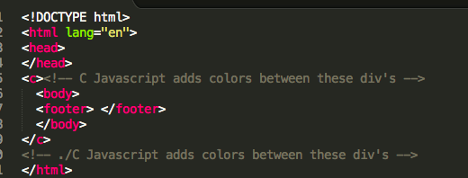

The Grapheme Theme was inspired from Marc-Jacques Mächler article titled: Synaesthesia and Learning A Differentiated View of Synaesthetic Perceptional Awareness.
Through out each page, everything within the .c div class will be automatically styled with the jquery highlight plugin. The highlight plugin searches text of given elements, in this case
<c> this code is searched</c>The Jquery fuction applies class to each letter and each letter style. Onload, the output looks like this:
<c> <span class="blue">t</span> <span class="green"> </span> <span class="pink">i</span> <span class="purple> s</span> </c>The image below is shows the html format used without file links. Include the file links to ensure functoinility.
The style sheet corresponds with the class and style to the elements.
.blue { background-color: #0000FF;}
.green { background-color: #008000;}
.purple { background-color: #800080;}
.yellow { background-color: #FFFF00;}
.pink { background-color: #FF00FF;}
Editing the colors or adding fucntions (symbols, different alphabet) can be done with editing the core files.
The class of the stylesheet file is titled fontcolor-theme.css and it can be found here:
Grapheme Theme/files/css/fontcolor-theme.css
With this stylesheet you may modify the color of the individual letters and numbers by editing the font color theme.
Open the file with your favriote text editor. As example, if I want to change every letter a then you will want to change the Hex color of the style class.
The fucntions of the jquery plugin file is titled fontcolor.js and it can be found here:
Grapheme Theme/files/js/fontcolor.js
With the fontcolor.js you may add characters, change the characters. Just remember, if you add any new characters, remember to add them in the style sheet. The image below is an example of the jquery file.
The MIT License (MIT)
Copyright (c) 2014 Carlos Vega
Permission is hereby granted, free of charge, to any person obtaining a copy of this software and associated documentation files (the "Software"), to deal in the Software without restriction, including without limitation the rights to use, copy, modify, merge, publish, distribute, sublicense, and/or sell copies of the Software, and to permit persons to whom the Software is furnished to do so, subject to the following conditions:
The above copyright notice and this permission notice shall be included in all copies or substantial portions of the Software.
THE SOFTWARE IS PROVIDED "AS IS", WITHOUT WARRANTY OF ANY KIND, EXPRESS OR IMPLIED, INCLUDING BUT NOT LIMITED TO THE WARRANTIES OF MERCHANTABILITY, FITNESS FOR A PARTICULAR PURPOSE AND NONINFRINGEMENT. IN NO EVENT SHALL THE AUTHORS OR COPYRIGHT HOLDERS BE LIABLE FOR ANY CLAIM, DAMAGES OR OTHER LIABILITY, WHETHER IN AN ACTION OF CONTRACT, TORT OR OTHERWISE, ARISING FROM, OUT OF OR IN CONNECTION WITH THE SOFTWARE OR THE USE OR OTHER DEALINGS IN THE SOFTWARE.